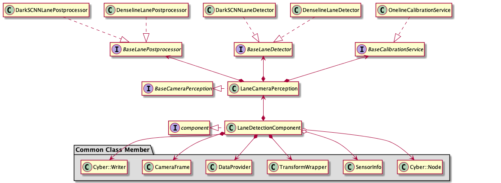
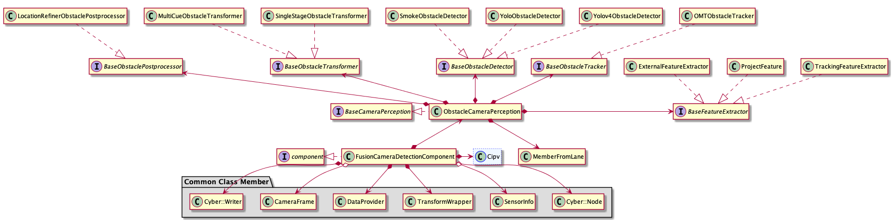

How to add a new camera detector algorithm¶
The processing flow of camera perception module is shown below:

The 3 detector algorithms introduced by this document were traffic_light_detector, land_detector, obstacle_detector. These 3 detectors are located in their own component. The architecture of each component is showed below:
Traffic Light:

Lane: 
Obstacle: 
As we can see clearly from above structure, each component has its own abstract class member base_XXX_detector. Different derived detector algorithms inherit base_XXX_detector and implement their main flows to complete the deployment. Next, we will take base_obstacle_detector as an example to introduce how to add a new camera detector algorithm. You could also refer to this document if you want to add traffic light detector or lane detector.
Apollo has provided three camera detector algorithms in Obstacle Detection – Smoke，Yolo, YoloV4. All of them could be easily changed or replaced by other algorithms. The input of algorithm should be preprocessed image data, while the output should be obastacle object data. This document will introduce how to add a new camera detector algorithm, the basic task sequence is listed below：
Define a class that inherits
base_obstacle_detectorImplement the class
NewObstacleDetectorAdd param proto file for
NewObstacleDetectorUpdate config file to put your detector into effect
The steps are elaborated below for better understanding:
Define a class that inherits base_obstacle_detector¶
All the camera detector algorithms shall inherit base_obstacle_detector，which defines a set of interfaces. Here is an example of the detector implementation:
namespace apollo {
namespace perception {
namespace camera {
class NewObstacleDetector : public BaseObstacleDetector {
public:
NewObstacleDetector();
virtual ~NewObstacleDetector() = default;
bool Init(const ObstacleDetectorInitOptions &options =
ObstacleDetectorInitOptions()) override;
bool Detect(const ObstacleDetectorOptions &options,
CameraFrame *frame) override;
std::string Name() const override;
}; // class NewObstacleDetector
} // namespace camera
} // namespace perception
} // namespace apollo
The function signature of base_obstacle_detector is pre-defined：
struct ObstacleDetectorInitOptions : public BaseInitOptions {
std::shared_ptr<base::BaseCameraModel> base_camera_model = nullptr;
Eigen::Matrix3f intrinsics;
EIGEN_MAKE_ALIGNED_OPERATOR_NEW
} EIGEN_ALIGN16;
struct ObstacleDetectorOptions {};
struct CameraFrame {
// timestamp
double timestamp = 0.0;
// frame sequence id
int frame_id = 0;
// data provider
DataProvider *data_provider = nullptr;
// calibration service
BaseCalibrationService *calibration_service = nullptr;
// hdmap struct
base::HdmapStructPtr hdmap_struct = nullptr;
// tracker proposed objects
std::vector<base::ObjectPtr> proposed_objects;
// segmented objects
std::vector<base::ObjectPtr> detected_objects;
// tracked objects
std::vector<base::ObjectPtr> tracked_objects;
// feature of all detected object ( num x dim)
// detect lane mark info
std::vector<base::LaneLine> lane_objects;
std::vector<float> pred_vpt;
std::shared_ptr<base::Blob<float>> track_feature_blob = nullptr;
std::shared_ptr<base::Blob<float>> lane_detected_blob = nullptr;
// detected traffic lights
std::vector<base::TrafficLightPtr> traffic_lights;
// camera intrinsics
Eigen::Matrix3f camera_k_matrix = Eigen::Matrix3f::Identity();
// narrow to obstacle projected_matrix
Eigen::Matrix3d project_matrix = Eigen::Matrix3d::Identity();
// camera to world pose
Eigen::Affine3d camera2world_pose = Eigen::Affine3d::Identity();
EIGEN_MAKE_ALIGNED_OPERATOR_NEW
} EIGEN_ALIGN16; // struct CameraFrame
Implement the class NewObstacleDetector¶
To ensure the new detector could function properly, NewObstacleDetector should at least override the interface Init(), Detect(), Name() defined in base_obstacle_detector Init() is resposible for config loading, class member initialization, etc. And Detect() will implement the basic logic of algorithm. A concrete NewObstacleDetector.cc example is shown：
namespace apollo {
namespace perception {
namespace camera {
bool NewObstacleDetector::Init(const ObstacleDetectorInitOptions &options) {
/*
Initialization of your detector
*/
}
bool NewObstacleDetector::Detect(const ObstacleDetectorOptions &options,
CameraFrame *frame) {
/*
Implementation of your detector
*/
}
std::string NewObstacleDetector::Name() const {
/*
Return your detector's name
*/
}
REGISTER_OBSTACLE_DETECTOR(NewObstacleDetector); //register the new detector
} // namespace camera
} // namespace perception
} // namespace apollo
Add param proto file for NewObstacleDetector¶
Follow the steps below to add parameters for your new camera detector:
Create the
protofile for parameters according to the requirement of the detector. If the parameters are compatible, you can use or just modify currentprotodirectly. As an example, you can refer to theprotofile fromsmoke detectoratmodules/perception/camera/lib/obstacle/detector/smoke/proto/smoke.proto. Remember to include the following content once you finished your definition:syntax = "proto2"; package apollo.perception.camera.NewObstacleDetector; // Your parameters
Refer to
yolo_obstacle_detectoratmodules/perception/production/data/perception/camera/models/and create yournewobstacledetectorfolder and*.ptfile：Note：The "*.pt" file should have the format defined in step one
Update config file to put your detector into effect¶
To use your new camera detector algorithm in Apollo， you have to config the following files according to your demand:
Refer to the following content to update
modules/perception/production/conf/perception/camera/obstacle.pt,put your*.ptfile created in previous step to the load path:detector_param { plugin_param{ name : "NewObstacleDetector" root_dir : "/apollo/modules/perception/production/data/perception/camera/models/newobstacledetector" config_file : "*.pt" } camera_name : "front_12mm" }
If you want to modify the structure of
detector_paramshown in step one or just add a new_param, your can do that atmodules/perception/camera/app/proto/perception.proto:message PluginParam { optional string name = 1; optional string root_dir = 2; optional string config_file = 3; } message DetectorParam { optional PluginParam plugin_param = 1; optional string camera_name = 2; }
If you create a new
*.ptinstead of usingobstacle.ptgiven in step one， you also have to modifymodules/perception/production/conf/perception/camera/fusion_camera_detection_component.pb.txt. The correspondingprotofile ismodules/perception/onboard/proto/fusion_camera_detection_component.proto：camera_obstacle_perception_conf_dir : "/apollo/modules/perception/production/conf/perception/camera" camera_obstacle_perception_conf_file : "NewObstacleDetector.pt"
Once you finished the above modifications, you new camera detector should take effect in Apollo.